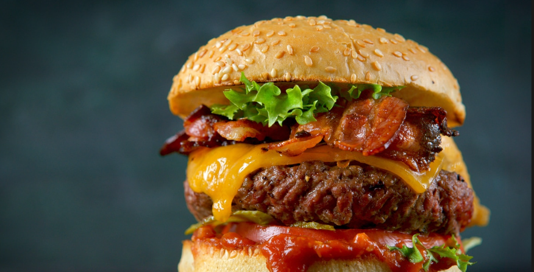

El Arte del Blend
14/06/2026 - La hamburguesa perfecta nace del "blend", la mezcla precisa de cortes de carne. La clave técnica es mantener una proporción 80/20 entre carne magra y grasa. Este porcentaje es fundamental porque, durante la cocción, la grasa se funde y aporta la jugosidad que evita que la carne se seque.

Al colocar el disco de carne sobre la plancha a 200°C, buscamos la Reacción de Maillard. Este proceso químico carameliza los azúcares y proteínas de la superficie, creando esa costra oscura y crujiente que protege el interior tierno.
Es este equilibrio entre la textura exterior y la humedad interna lo que define a una pieza de alta cocina, elevando un plato sencillo a una experiencia gastronómica completa.